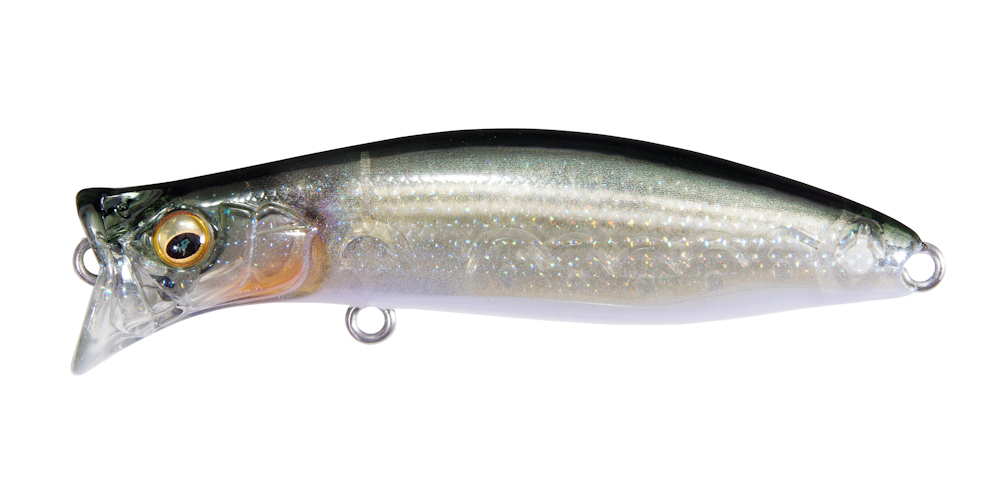
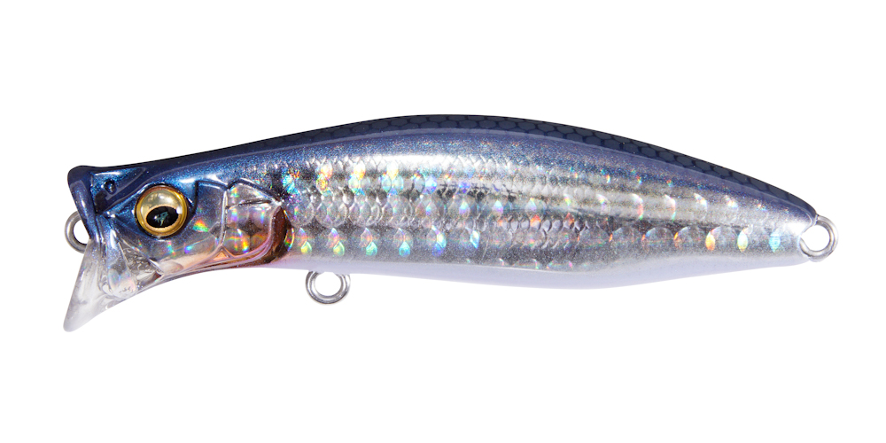
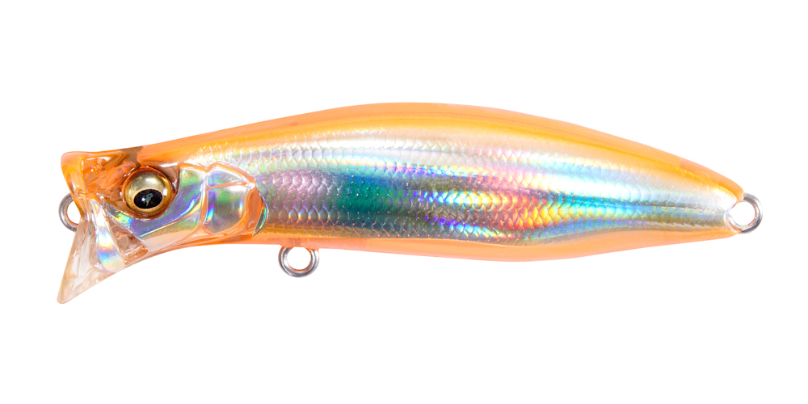
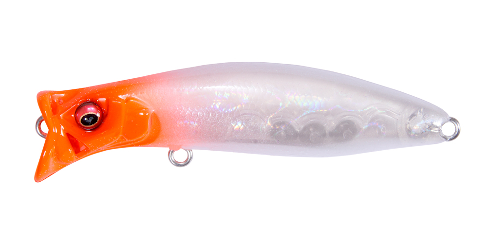

キリンジ70
（KIRINJI 70）
キリンジ70はMegabass（メガバス）のウェイクベイトです。
90mmサイズと同じハイドロダイナミクス「4 INTAKE 4 OUT」構造（PAT.P）で、ウェイクアクションに必要な水流だけを取り込み、超軽快な巻き心地のままウルトラハイピッチロールで泳ぎます。シーズン序盤の、表層を泳ぐハク・イナッコなど小型ベイトのパターンに効果的な70mmモデルです。

画像出典:Megabass公式HP
スペック
- メーカー
- Megabass（メガバス）
- タイプ
- ウェイクベイト（フローティング）
- 全長
- 70mm
- 自重
- 7g
- レンジ
- 0〜0.1m
- フック
- #8×2
- アクション
- ウルトラハイピッチロール
- ターゲット
- シーバス・クロダイ
- 価格
- 1,720円（税別）
▼今すぐチェック
キリンジ70の特徴
小型ベイトのパターンに合わせた、70mmのウォータースルー・ウェイクベイト
-
90と同じ「4 INTAKE 4 OUT」構造
ウェイクアクションに必要な水流だけを自発的に取り込み、抵抗感のない超軽快な巻き心地で、ウルトラハイピッチロールを出し続けます。
-
ハク・イナッコパターンに
表層を泳ぐハクやイナッコなど小型ベイトをイミテートした釣りに効果的。シーズン序盤のシーバスパターンで活躍します。
-
ポッパーとしても使える
ウォータースルー機構でバブル＆スプラッシュを発生させ、ポッパーとしてアクティブなバイトを引き出せます。シーバスだけでなくクロダイゲームにも使えます。
キリンジ70の使い方
基本はただ巻きで、水面に引き波を立てながら泳がせます。小型ベイトの群れの動きに合わせて、ゆっくりから速めまで巻き速度を変えてみましょう。
反応がないときは、ロッドで軽くあおってポッパーのようにスプラッシュを出し、アクティブに誘うのも効果的です。
キリンジ70の得意な状況
シーズン序盤など、表層にハクやイナッコの小型ベイトが群れている状況。水面を意識しているシーバスやクロダイに、小さなシルエットで口を使わせたいときに向いています。
ワンポイント
ベイトが少し大きいときや、飛距離が欲しいときは同じ構造のキリンジ90に。ベイトのサイズに合わせて70と90を使い分けると、同じアクションのまま状況に合わせられます。
キリンジシリーズの使い分け
| モデル | 全長／自重 | 得意な場面 |
|---|---|---|
| キリンジ70 | 70mm／7g | レンジ0〜0.1m。ハク・イナッコなど小型ベイトに（本記事のモデル） |
| キリンジ90 | 90mm／14.5g | 飛距離と存在感のある基準サイズ |
どちらも同じウォータースルー機構のウェイクベイト。ベイトの大きさとタックルに合わせてサイズを選びましょう。
人気カラー
公式ラインナップから4色を紹介します（カラー名は公式の表記のまま）。

GP HAKUハクを意識したナチュラルカラー。ハクパターンの河川や港湾に。

FA BORAボラを意識したファインアートフィニッシュ。イナッコパターンに。

JOUYATOU MAGIC名前のとおり常夜灯まわりを意識したカラー。夜の港湾に。

GP RED HEAD定番のレッドヘッド。濁りやローライトでシルエットを出したいときに。
画像出典:Megabass公式HP
キリンジ70に似ているルアー
-
 キリンジ90
Megabass
詳細はこちら＞
キリンジ90
Megabass
詳細はこちら＞
同じキリンジの90mm・14.5g。ベイトが大きいときや、飛距離が欲しいときに。
-
 イネムン60
ブルーブルー
詳細はこちら＞
イネムン60
ブルーブルー
詳細はこちら＞
全長60mm・自重6gの引き波系トップ。同じくらいのサイズで、ただ巻きで水面を押したいときに。
-
 ミニコバコ
GOTO9
詳細はこちら＞
ミニコバコ
GOTO9
詳細はこちら＞
全長53mm・約6gのトップウォーター。より小さいシルエットで水面を攻めたいときに。